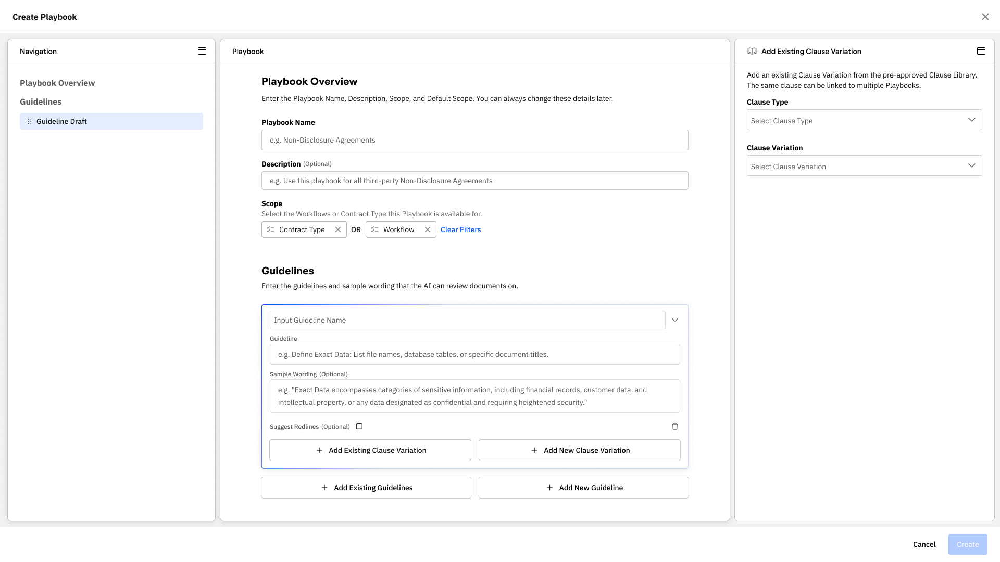
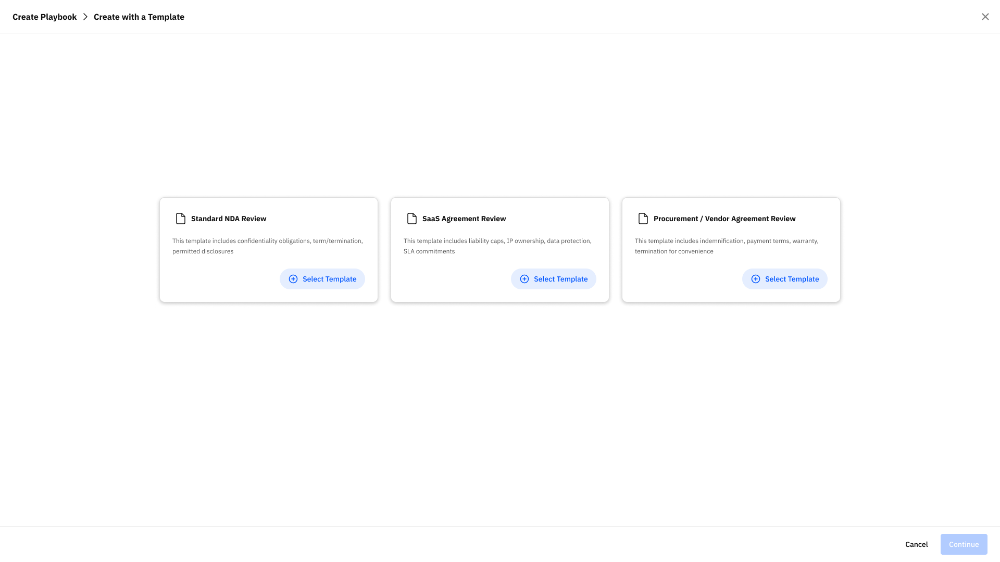
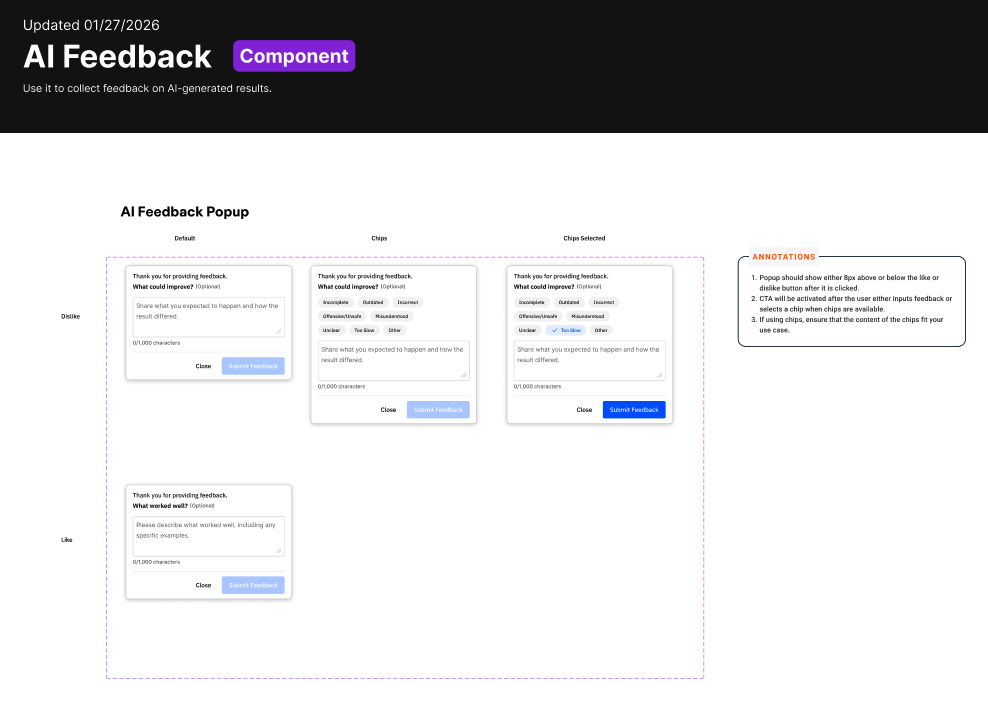
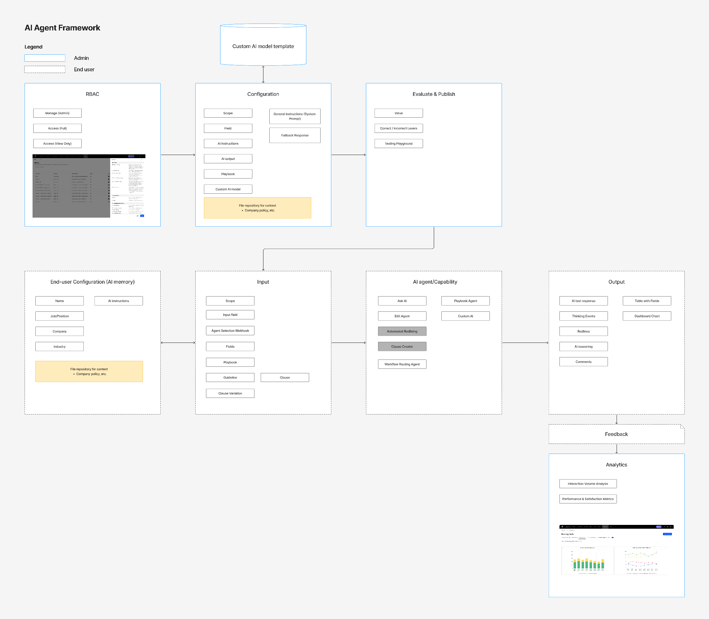

Establishing the design framework for high-margin autonomous legal review

Overview
Product
The Contract Negotiation Agent is an AI-driven feature for autonomous legal contract review. I led the design strategy for a 0-to-1 product launch and established the AI Design System that became the standard across Workday's Evisort ecosystem.
My roles and responsibilities
Lead Product Designer — 0-to-1 Product Launch & AI Design System
Team
3 Engineering Teams (Data Science, Platform, UI), 2 PMs, 1 Sr. Director of Product
Timeline
October 2025 – April 2026 (6 months)
Background
The Challenge: The "Black Box" Problem
Before AI Playbooks, contract review was a manual, high-risk bottleneck. While LLMs offered a solution, legal teams were hesitant to adopt them due to:
- Lack of Trust: "Black-box" AI outputs were a liability in high-stakes negotiation.
- Complexity: Lawyers aren't prompt engineers; they couldn't "program" the AI to follow their specific company policies.
- Cost vs. Value: At $50 per run, the UX needed to guarantee precision to justify the premium consumption model.
The Business Impact
I led the design strategy to transition Workday's Evisort to a consumption-based Revenue Engine.
Strategic Reach
Secured adoption from Netflix, Anthropic, and Coinbase
Market Validation
Provided the core design evidence for Workday's inclusion in the Gartner Magic Quadrant (Service-Centric Cloud ERP)
Leadership: Bridging the "Messy Middle"
I served as the design lead across three disparate engineering squads to resolve architectural fragmentation.
- The Approach: I led rapid prototyping and "Customer Zero" feedback loops with internal legal and sales teams to validate technical feasibility against user needs.
- The Outcome: I consolidated competing technical visions into a unified Contract Intelligence Framework, accelerating the transition from Internal Early Access to a market-ready product.
Product Strategy & Implementation
Programmable Intelligence: The AI Playbook Builder
I designed a "Zero-to-One" configuration layer that translates high-level legal intent into actionable AI instructions. By building a structured UI for complex rule-setting, I eliminated the need for manual prompt engineering—allowing legal teams to "program" their own agent with total precision.

The AI Playbook Builder: Translating complex legal intent into structured AI instructions without prompt engineering.
Scalability: The Template Framework
To drive adoption for the $50/run model, I architected a library of pre-configured legal standards. This eliminates the "cold start" problem for new customers, accelerating time-to-revenue by allowing enterprise accounts to move from setup to their first billable run in minutes.

Template Framework: Eliminating the 'cold start' barrier to accelerate enterprise adoption and time-to-revenue.
Trust Architecture: Review Results & Reasoning
To justify premium consumption-based pricing, I focused on "Explainable AI." I architected reasoning cards that cite specific source policies, transforming the AI from a suggestive tool into a professional-grade legal associate that users can verify and trust in seconds.
AI Review and Results: Policy-backed reasoning cards that justify premium pricing through total AI transparency.
The Force Multiplier: AI Prototyping Task Force
I leveraged this project to establish the AI Prototyping Task Force and the Evisort AI Design System.
- Systemic Scaling: I codified reusable patterns for non-deterministic AI states (streaming text, confidence signaling, and feedback loops).
- The Result: This infrastructure reduced design-to-dev overhead for all subsequent AI features, allowing the team to scale "Agentic" UI consistently across the platform.

Evisort AI Design System: Component specifications for AI feedback loops, ensuring a unified "Human-in-the-loop" standard across all product squads.

AI Agent Architecture Diagram: A systemic blueprint to align Engineering and Product on the end-to-end lifecycle of AI agents, from RBAC configuration to analytics feedback loops.
Executive Summary of Impact
- High-Value Adoption: Active engagement from Netflix, Anthropic, LinkedIn, and AON.
- Operational Efficiency: Shifted the organization toward a "Human-in-the-loop" standard that reduced R&D waste on unvalidated AI concepts.
- Platform Maturity: Established the foundational UI/UX patterns now used as the global standard for AI features across the Workday/Evisort ecosystem.